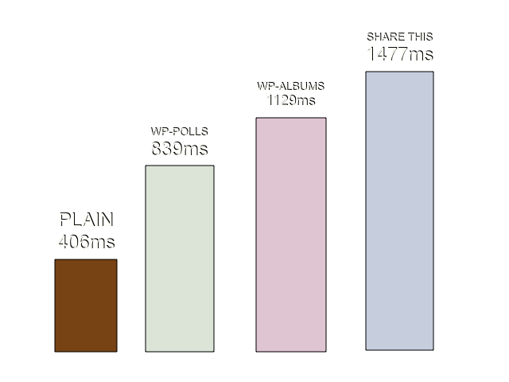

Writing Better Plugins for a Better Web
By Divya Manian
Who am I?
Open Web Vigilante
Web Opener at 
Core team

Co-conspirator
Website
Some Wordpress Sites I did
Wordpress Plugins Now

How they are now
Start from PHP than work backwards from markup, styles, and script.
Use several assets and files.
Plugins Should
Be as less intrusive as possible
Maintainable, forward compliant.
Efficient, least time consuming.
Why does website performance matter?
Breaking News! Users use several devices
Even more Breaking News! They don't always have broadband connections!
People use a lot of plugins on their sites. Each adding a layer of traffic burden.
Lets fix this!
Philosophy
Start from the end
Style
Tools
Markup
Learn
Scripts
- Avoid using JavaScript plugins (if you can).
- Plain JavaScript could be faster than depending on other jQuery plugins.
Tools
Learn
Videos: The JavaScript Programming Language, Learning JavaScript, jQuery Performance Tricks
Assets
Avoid using images for styles, if it is possible.
Use a sprite if absolutely necessary.
Test
So, Now
Mantra
Use as less as you can get away with.
- Find your constraints
- Use as less styles as possible, let the theme do most of the styling.
- Choose your markup carefully.
- Minimize your scripts, and avoid external dependencies if you can.
Thanks
Questions? Holler @nimbuin